| SOURCE | TITLE| IMAGE MATCH | click to source page |
| eBay | Romania 1932, Mi#436, Sc#416, King Carol II on horse back, MNH! | eBay | 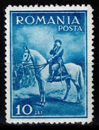 |
| eBay | Romania Scott #416, Single 1932 Complete FVF Used | eBay | 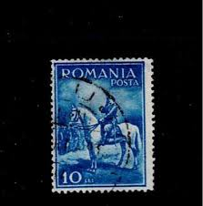 |
| UTCluj | CONSIDERAŢII ASUPRA EMISIUNII DE TIMBRE UZUALE „CAROL II – CĂLARE” (I) | 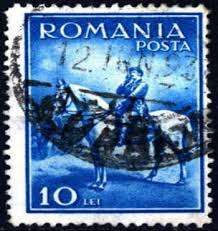 |
| eBay UK | G/VG (Good/Very Good) Used Romanian Stamps for sale | eBay UK |  |
| Alamy | ROMANIA - CIRCA 1932: a stamp printed in the Romania shows King Carol II, King of Romania, circa 1932 Stock Photo - Alamy | 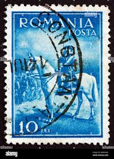 |
| Todocolección | rumania, 1980, 15 congreso internacional de cie - Buy Antique stamps of Romania on todocoleccion | 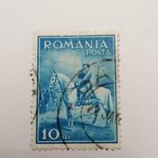 |
| eBay | Used Miniature Sheet Romanian Stamps for sale | eBay | 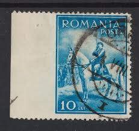 |
| lastdodo.com | Carol II (1932) - Romania - LastDodo | 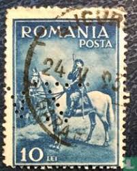 |
| Dreamstime.com | Carol Ii Stock Photos - Free & Royalty-Free Stock Photos from Dreamstime | 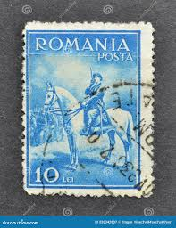 |
| Delcampe | 1881-1918: Charles I - Rare ROMANIA Perfin Perforé ,,S&F'' CERNAUTI-Catalog of Romanian perfins Laszlo Eros B RARE ( 6-20 examples reported ) | 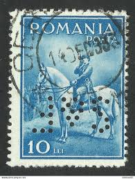 |
| eBay | ROMANIA - 1932 KING CAROL II SCOTT#416 - MINT HINGED | eBay | 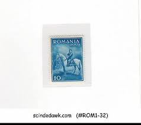 |
| Suomen Filateliapalvelu Oy | Romania Mi 436 ** | Philatelic Service of Finland | 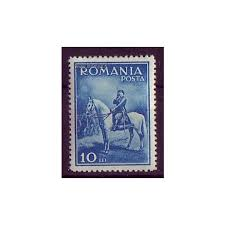 |
| eBay | Romania 2005 Jules Verne Literature Books Castle Train Horses Danube River Bl4 | eBay | 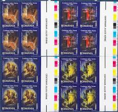 |
| wopa-plus.com | Jules Verne Centenary (1905-2005) (FDC S | Romania Stamps | Worldwide Stamps, Coins Banknotes and Accessories for Collectors | WOPA+ | 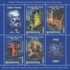 |
| wopa-plus.com | Jules Verne Centenary (1905-2005) | Romania Stamps | Worldwide Stamps, Coins Banknotes and Accessories for Collectors | WOPA+ | 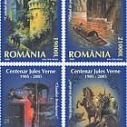 |
| eBay | ROMANIA 1932 KING CAROL II HORSE ERROR USED ROYAL POST | eBay | 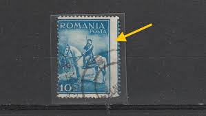 |
| eBay | ROMANIA SCOTT B28 MH VF - 1931 3L + 3L ULTRA SEMI-POSTAL ISSUE - BOY SCOUTS | eBay | 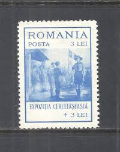 |
| eBay | Romanian Science & Technology Postal Stamps for sale | eBay | 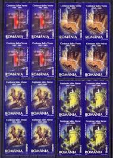 |
| eBay | Romania Scott #B28 Mint | eBay | 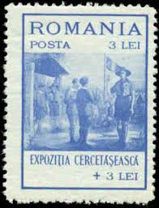 |
| eBay | Romania Stamp 1939 King Carol I birth centenary series 5 stamps | eBay | 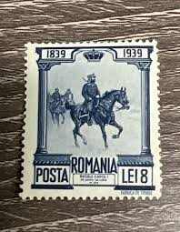 |
| eBay | Romanian Stamps. Scott's # 4718a . MNH. Jules Vern. sal's stamp store. | eBay | 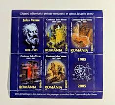 |
| The Kingdom of Unixploria | Jules Verne | 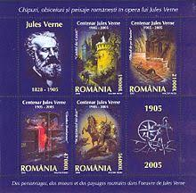 |
| pravaliacutimbre.ro | Magazin filatelic online – PravaliaCuTimbre | 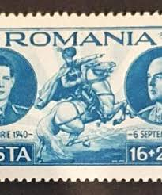 |
| Medium | The Story of Leyla and Majnun. A beautiful work that stands as a… | by Kulturdede | Medium | 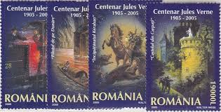 |
| eBay | VF (Very Fine) Romanian Stamps for sale | eBay | 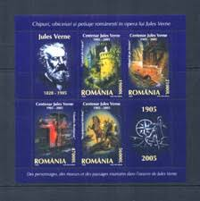 |
| eBay | 1944 Motorcycle,Post Coach,Postman,Truck,Horses,Postillon,Romania,817,CV=$22,MNH | eBay | 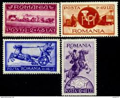 |
| eBay | Topical Postal Stamp Collections & Mixtures for sale | Shop with Afterpay | eBay Australia | 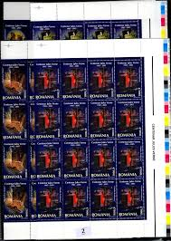 |
| eBay | Romania 1992, Mi#4802, Sc#B458, Stamp Day, postman, MNH! | eBay | 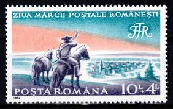 |
| buyhungarianstamps.com | 4715-4718 Romania - Scenes From Stories, Set of 4 (MNH) – Eastern Europe Postage Stamps | Hungaria Stamp Exchange | 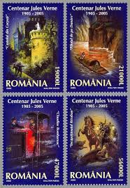 |
| eBay | ROMANIA Sc 4718a NH SOUVENIR SHEET OF 2005 - BOOKS OF JULES VERNE | eBay | 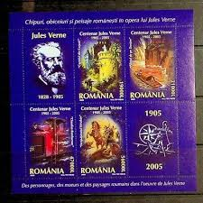 |
| eBay | 1 Number Postage Romanian Stamps for sale | eBay | 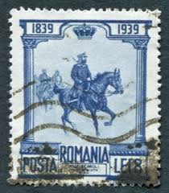 |
| eBay UK | Used George VI (1936-1952) Romanian Stamps for sale | eBay UK | 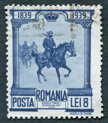 |
| eBay | Romania Mint Stamps Sc#B26-B30 No Gum | eBay | 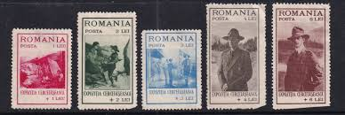 |
| Find Your Stamps Value | At Calafat 50b violet brown stamp price, value | 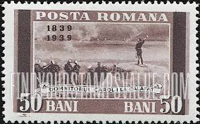 |
| Find Your Stamps Value | Value of posta r.p.romina stamps | 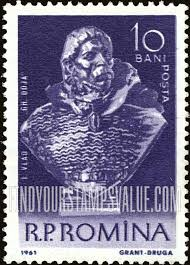 |
| linearcollider.org | Europe 100 Different Stamps 100 Different European Stamps Collection - Includes Germany Stamps For Collectors Canada Postage Stamps | 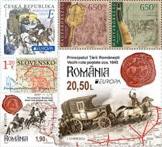 |
| AME Cleaning Services | Collector Stamps MNH Romania 2016 Cast Stamps Collection - Complete Set MNH Celebrities Film Theater Celebrities Film Theater Radio Stamps | 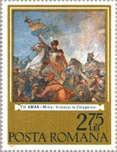 |
| Stamp Community Forum | Greek Mythology - On Non Greek Stamps! - Stamp Community Forum | 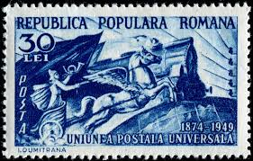 |
| pvoller.net | WW2 Postal History and More | 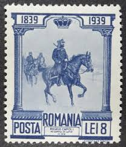 |
| eBay | Military, War Postage Romanian Stamps for sale | eBay | 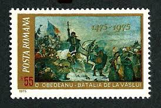 |
| Find Your Stamps Value | Prince Carol and Carmen Sylva (Queen Elizabeth) 2l myrtle green Briefmarkenpreis | 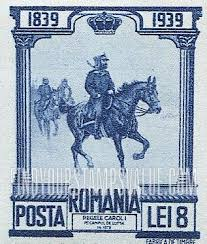 |
| Shutterstock | Horse Head With Letters: Over 447 Royalty-Free Licensable Stock Photos | Shutterstock | 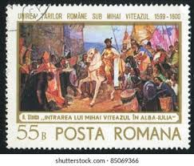 |
| eBay | ROMANIA STAMPS 1968 Transylvania Michael the Brave Horse Union ERROR POST USED | eBay | 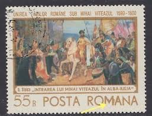 |
| eBay | D440294 Romania S/S MNH Paintings Art | eBay | 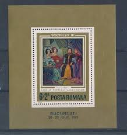 |
| Europa Study Unit | EUROPA NEWS | 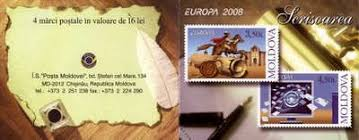 |
| eBay | ROMANIA:1946 SC#625-27 MH Romania-Soviet friendship AJ1649 | eBay | 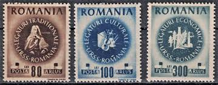 |
| wopa-plus.com | Romanian Postage Stamp Day - Decebal (106-2006) | Romania Stamps | Worldwide Stamps, Coins Banknotes and Accessories for Collectors | WOPA+ | 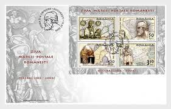 |
| romaniastamps.com | New Page 2 | 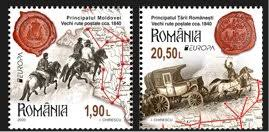 |
| eBay | Rumänien 2019 Mi.7491-96 @ Brancusi,Coanda,Athenäum,Donaudelta,Adler,Statue | eBay | 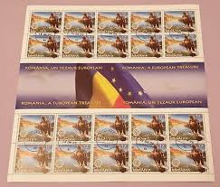 |
| eBay | 7. Romania 1977 The 100th Anniversary of the Independence imperforated high cv | eBay | 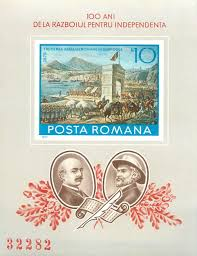 |
| Stamp Community Forum | Scouting Stamps From Around The World - Page 23 - Stamp Community Forum | 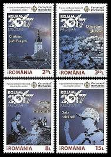 |
| Banknotecoinstamp | Stamps Theme – Page 69 – Banknotecoinstamp | |
| eBay | ROMANIA A EUROPEAN TREASURE MINIATURE SHEET MNH | eBay | |
| Shutterstock | Romania Circa 1961 Stamp Printed By Stock Photo 82805620 | Shutterstock | |
| eBay | ROMANIA Jules Verne, Author MNH set | eBay | |
| eBay | Romania STAMPS 2020 EUROPE CEPT HORSES MNH POSTAL SET ROUTES TRANSPORT | eBay | |
| pravaliacutimbre.ro | Organizația Sportului Popular - coli mici de câte 16 timbre, dantelat și nedantelat - 1946 - LP199a – PravaliaCuTimbre | |
| eBay | ROMANIA 1967 -60th Anniv. of Peasant Uprising-PaintingMNH, OG,block4+2 stamp | eBay | |
| eBay | ROMANIA 1977 10L MNH Independence Imperforate Sheet Mi BL140 Yt BF128a Gem 189 | eBay |